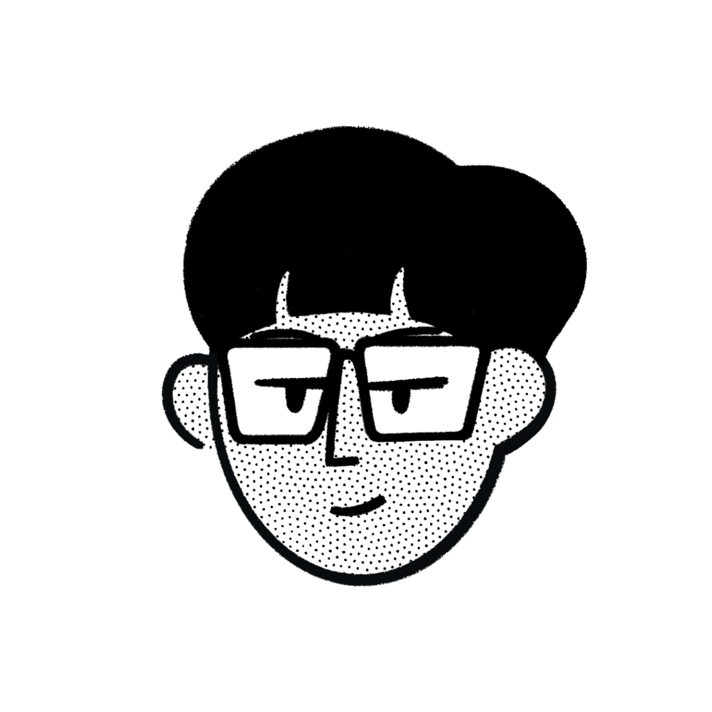
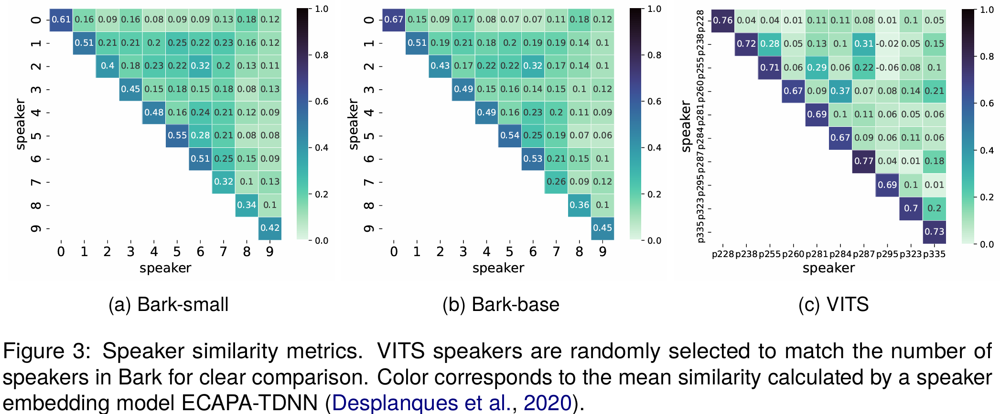

15. Gen2Gen Consistency (2026.05.04)
| MeetingPaper 1 | |
 Haesol Shin |
Z. Last Meeting Summary
- Gen2Gen 연구 재확인
- cloning model에서의 reference, content prompt 영향 확인
A. Gen2Gen 연구 재확인
A.1. 기존 연구에서의 Consistency 정의
- 학습 측면에서 일관성은 주로 speaker conditioning 능력을 이야기함.
- VALL-E나 SPEAR-TTS와 같은 모델들은 zero-shot TTS 능력을 주장
- 해당 맥락에서 consistency는 “reference의 특성이 얼마나 잘 conditioning 되었는가?”를 의미함.
- ref vs gen cosine similarity도 해당 능력을 평가하기 위한 장치
A.2 기존 Intra-consistency 접근
Evaluating Text-to-Speech Synthesis from a Large Discrete Token-based Speech Language Model (2024)
- TTS system에서 기존에 다루지 않던 평가 영역을 다루는 시도
We examine five key dimensions: speaking style, intelligibility, speaker consistency,
prosodic variation, spontaneous behaviour. (Abstraction)
- A.1에서 언급한 것과 같이 기존의 consistency는 cross-domain similarity 문제
- 해당 논문에서의 consistency는 동일 화자 조건으로 생성된 샘플들 사이에서 목소리가 얼마나 일관되는가를 묻는 intra-speaker consistency.
{kind=link}

- 해당 연구는 voice cloning model에서의 문제 분석
PromptTTS 2: Describing and Generating Voices with Text Prompt (2023)
- 텍스트 프롬프트 기반 TTS의 두 가지 핵심 문제 중 하나로 "one-to-many problem"을 명시
- 텍스트 프롬프트만으로는 음성의 모든 variability를 기술할 수 없어, 같은 텍스트 프롬프트에서도 다른 timbre가 생성될 수 있다는 것
→ 같은 prompt로 매번 다른 목소리가 나올 수 있다는 점을 명시
B. Reference, Content 영향 실험
B.1. 실험 설계
- 화난 reference, 인자한 content
- 그 반대의 세팅으로 실험 시 어느 조건의 영향을 받아 음성이 생성되는가?
elevenlabs v3를 통한 reference audio 생성
- angry voice (Adam)
[angry] [frustrated] You had ONE job — how could you possibly mess this up AGAIN?!
- calm voice
[calm] [softly] I hear you, and I want you to know that everything is going to be just fine.
B.2. 실험 결과
a. Angry reference, Calm content
MegaTTS
Chatterbox
→ 화자 특성(세기 등)은 유지되나, 화난 감정은 유지 X
→ 감정은 content에 dependent
b. Calm reference, Angry content
MegaTTS
Chatterbox
⇒ emotion은 reference가 아닌 content prompt 단에서 제어되는 특성
Fish Audio, Gemini TTS 등이 content 내에서 tag를 사용해 스타일 및 emotion을 제어하는 이유